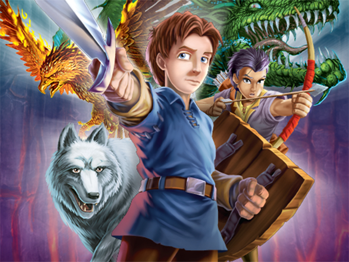

A hero who takes after his father Taladon the Swift and has saved the realm countless times.
Tom has countless allies ranging from his human best friend, Eleanor, to the first Beast he faced, Ferno.
On his quests, Tom has amassed a massive amount of magical items from the Golden Armour to Gorgonian Jewels but he always has his trusted shield, fitted with tokens from the beasts of Avantia.